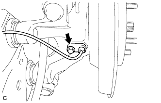
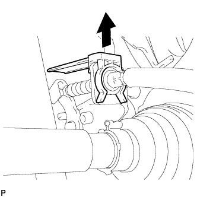

Rear Axle Hub & Bearing Assembly LH (4WD) Removal |
| 1. Remove Rear Tire |
| 2. Remove Rear Axle Shaft Nut LH |
 |
Set the SST aligned with the groove of the rear drive shaft assembly LH, and using a hammer, unstake the rear axle shaft nut.
Using a socket wrench (30mm), remove the rear axle shaft nut.
| 3. Disconnect Speed Sensor Rear LH |
 |
Remove the bolt and disconnect the rear speed sensor LH from the rear axle carrier.
| 4. Remove Parking Brake Lever Protector |
 |
Remove the parking brake lever protector from the parking brake cable assembly No.3.
| 5. Disconnect Parking Brake Cable Assembly NO.3 |
 |
Disconnect the cable end from the operating lever of the rear disc brake cylinder assembly LH.
 |
Using an offset wrench (14mm), disconnect parking brake cable assembly No.3 from the rear disc brake cylinder assembly LH.
| 6. Disconnect Rear Disc Brake Caliper Assembly LH |
 |
Remove the 2 bolts and disconnect the rear disc brake caliper assembly LH.
| 7. Remove Rear Disc |
 |
Put matchmarks on the disc and axle hub, and remove the disc.
| 8. Remove Rear Axle Hub & Bearing Assembly LH |
 |
Remove the 4 bolts and disconnect the rear axle hub & bearing assembly LH from the rear axle carrier.
While lightly tapping the end of the rear drive shaft with a plastic hammer, remove the rear axle hub & bearing assembly LH from the rear axle carrier.